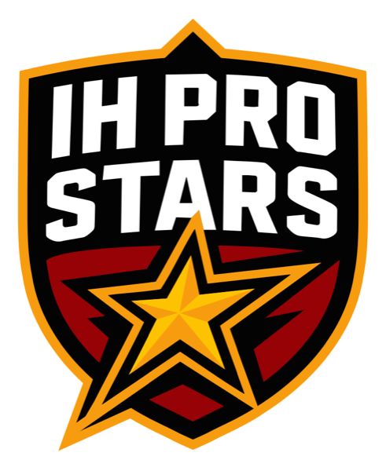
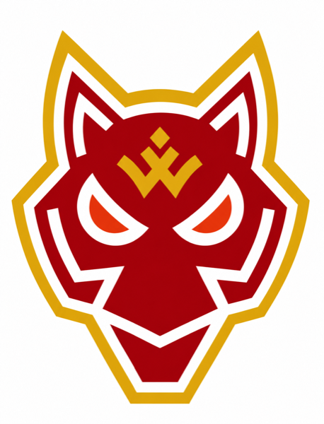
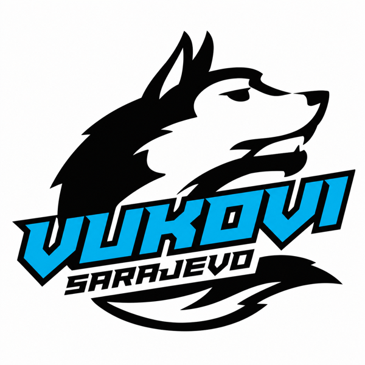
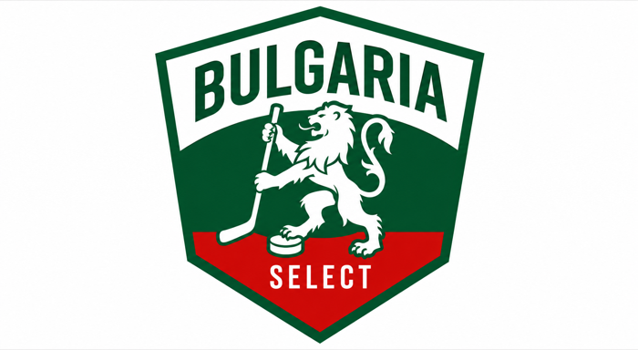

IIHF Official Rule Book3 × 20 min stop time
Points 3 · 2 · 1 · 05 min 3-on-3 overtime, then a shootout
Players 16+, no upper age limitRoster up to 30, 20 skaters + 2 goalies per game
Season format
Regular season October 2026 – January 2027, play-offs in a single weekend in January 2027. The season calendar is published separately. Teams gather for several days about once a month and play several rounds at a time. Every pair of teams meets the same number of times and every team plays the same number of games. One table, place decided by total points. The season ends with a play-off weekend in January 2027: with four teams a “Final 3”, with five teams a Final Four with a third-place game.
Teams

IH Pro Stars
Novi Sad · Serbia

Wolves
Belgrade · Serbia

Vukovi
Sarajevo · Bosnia and Herzegovina

Bulgaria Select
Sofia · Bulgaria
Fifth place
Open until the season starts
Data pages
Permanent pages, updated after every game round:
Documents
- Regulation Season 2026/27 — PDF, the full competition regulation (IIHF-based).
- Official game sheets — index of match protocols, one PDF per game.
- Video archive — [YOUTUBE CHANNEL]